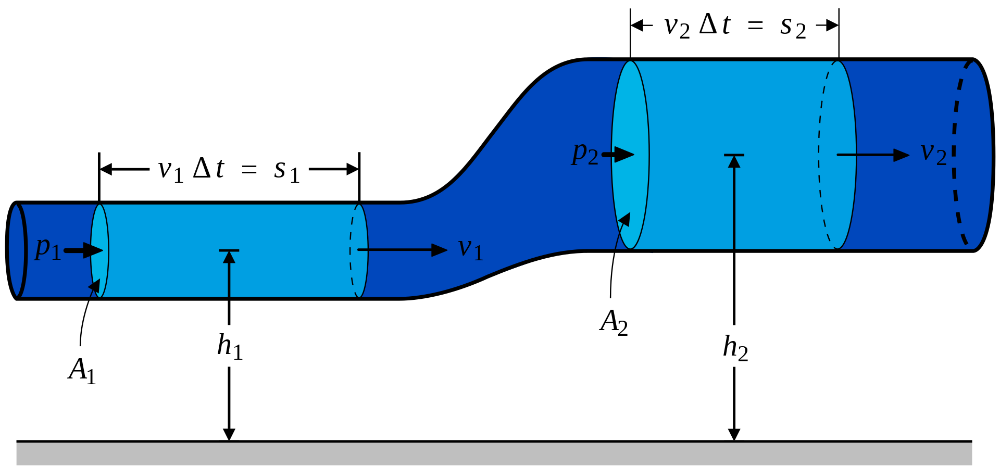

¿Cómo funciona un Formula 1?
Los coches de F1 son máquinas complejas y sofiticada, capaces de alcanzar los 330 km/h en rectas y de afrontar curvas muy complejas a mas de 100 km/h. COmo te podrás imaginar, esto no se debe solo a una buena unidad de potencia, sino a la construción de un buen chasis, el correcto desarrollo de la aerodinámica y el cuidado de los componentes para conseguir un elevado grado de fiabilidad evitando así las roturas de motor. Sabiendo esto, hagamos un pequeño repaso de como funcionan estos monoplazasLA AERODINÁMICA
Seguro que todos los amantes de las carreras recordamos esta famosa frase de Enzo Ferrari: «La aerodinámica es para fracasados que no saben hacer motores». Como dijimos antes, claro está hoy en día que se equivocaba. En los monoplazas modernos, la aerodinámica es quizás la parte más importante del desrrollo del coche, pues es la que permite que el coche valla lo mas pegado posible al suelo y pueda afontar las curvas a velocidades demenciales. Esto se consigue con un correcto aprovechamiento de los flujos de aire.
La aerodinámica de un Formula 1 se basa fundamentalmente en el principio de Bernoulli, que dice que el aumento de velocidad de un fluido provoca la disminución de la presión estática. Basicamente, es el mismo principio que permite que los aviones vuelen. Cuando el aire "choca" frontalmete contra el monoplaza, este tiene dos caminos a seguir: sobre la superficie superior del coche y sobre el fondo plano. Como podemos iumaginar, por debajo del coche el aire se mueve más rápido porque tiene menos obstáculos. Según Bernoulli, esto genera una zona de baja presión bajo el coche que se compensa con una zona de alta presión sobre el coche. De esta forma, se genera una carga aerodinámica que pega el coche al suelo consiguiendo así el agarre aerodinámico.
Como la energía debe mantenerse, Bernoulli establece que la relación entre las presiones y la velocidad del aire debe ser constante. Fuente: wikipedia.org
Imágen del funcionamiento de un DRS. En la imagen superior el DRS está abierto y en la parte inferior, cerrado. Fuente: wikipedia.org
Por otra parte, los alerones son los encargados de generar la carga aerodinámica a coste de perder velocidad y aceleración por lo que hay que buscar un equilibrio entre el lo que dice Bernoulli y la carga generada por los alerones. Así, en circuitos con muchas curvas como Mónaco o Zandvoort, prima una alta carga aerodinámica por lo que se apostará por alerones más inclinados mientras que en circuitos como Monza o Baku, con larguísimas rectas, es preferible una baja carga aerodinámica por lo que se emplean alerones más planos.
Los alerones traseros de un Formula 1 cuentan desde el año 2011 con una función extra, el DRS (Drag Reduction System o Sistema de Reducción del Rozamiento). El DRS consiste en elevar el flap superior del alerón trasero, generando un espacio entre los flaps del alerón por donde puede pasar el aire. Realmente sería como convertir un alerón curvo en uno plano y como ya vimos antes, eso supone menos carga y más velocidad. El DRS solo se puede utilizar, por seguridad, en determinadas zonas del circuito (generalmente las rectas mas largas del mismo). En los entrenamientos y en la clasificación se puede usar siempre que se quiera (pero solo en las zonas delimitadas), pero en carrera solo se puede emplear cuando se está a menos de un segundo del coche de delante, pues su función principal es facilitar los adelantamientos.
LA UNIDAD DE POTENCIA
Cuando escuchamos un formula 1 siempre nos imaginamos esos motores ruidosos con un sonido muy característico. Son los V10 (1995-2005) y los V8 (2006-2013). Pero desde 2014, los motores atmosféricos fueron sustituidos por los V6-turbo, una nueva generación de motores híbridos que suspusieron la implementación de una electónica más sofisticada. Las primeras implementaciones electrónicas llegaron en 2009 con el KERS (Kinetic Energy Recovery System o Freno Regenerativo. El KERS fue un dispositivo que permitió a los pilotos almacenar la energía cinética liberada por el coche cuando este reducía su velocidad en las curvas. Luego, esta energía podía ser empleada por los pilotos para dar un impulso extra al coche y conseguir una mayor velocidad punta. Pese a esto, el sistema KERS dotaba de un maypr peso al monoplaza porqu hacía que los tiempos en las vueltas cronometradas fuesen más lentos de los esperados. Es por eso que muchas escuderías optaron por no utilizarlo y otras, como McLaren o Ferrari lo emplearon solo en circuitos de baja carga aerodinámica (con muchas rectas) como Monza o Spa-Francorchamps. En 2010 ninguna escudería quiso utilizar el sistema, pero en 2011, las mejoras implementadas hicieron que todas los equipos volvieran a incluirlo en sus coches hasta 2014, pues los nuevos motores V6 requerían una electrónica más compleja.
Como ya hemos mencionado, en 2014 tuvo lugar un importante cambio en las regulaciones técnicas que introdujeron el motor híbrido V6-Turbo. Una de las principales novedades fue la introducción del ERS (Energy Recovery System) en sustitución del KERS. Más adelante nos centraremos en esto pero ahora desengranar brevemente las partes del motor:

Imágen de un motor V6.Fuente: wikipedia.org
Imágen del funcionamiento del ICE.Infografía extraída de Honda.es
El ICE (Internal Combustion Engine): El V6-Turbo posee 6 cilindros (de aquí lo de V6) y 1600 caballos de potencia. Los cilindros estan situados 3 a 3 en cada lado del motor en forma de V (de aqui la V del nombre). Emplea un combustible muy similar al convencional que usan los vehículos comerciales.
Imágen del funcionamiento de un Turbocompresor.Infografía extraída de Honda.es
El TUROCOMPRESOR: Además del sistema híbrido, los motores de combustión interna (ICE) poseen un turbocompresor que proporciona potencia adicional al motor. El turbo funciona recoge gases calientes del escape y los utiliza para hacer girar el compresor. De esta manera, se mejora la eficiencia del aire y el combustible que entran en el motor, favoreciendo la refrigeración del mismo. En definitiva, el turbocompresor ayuda a aumentar la potencia del motor y mejora su eficiencia energética.
Imágen del funcionamiento de un MGU-K.Infografía extraída de Honda.es
MGU-K (Motor Generator Unit-Kinetic): Es, quizas, el componente más compejo de la unidad de potencia. Durante el frenado del vehículo, se genera una gran cantidad de calor que es aprovechado por el MGU-K para producir energía eléctrica. Esta energía se almacena en el ERS y se transfiere a la transmisión a través del MGU-K, lo que otorga al automóvil un aumento de aproximadamente 160 caballos de fuerza. Además, la energía también puede ser utilizada para impulsar el turbo, mediante la transmisión al MGU-H.
Imágen del funcionamiento de un MGU-H.Infografía extraída de Honda.es
MGU-H (Motor Generator Unit-Heat): Utiliza el calor generado por los gases de escape del vehículo para impulsar el coche de una forma muy similar al MGU-K. Tiene la capacidad de trabajar extrayendo o introduciendo energía. Funciona sobre todo como respaldo del turbo, ayudando al turbocompresor a ganar velocidad al pisar el acelerador
Imágen del funcionamiento del ERS.Infografía extraída de Honda.es
SISTEMA DE ALMACENAMIENTO DE ENERGÍA: Cada motor de F1 tiene su propia batería para almacenar la energía eléctrica obtenida a través del MGU-K y el MGU-H. La energía puede generarse durante el frenado del vehículo (MGU-K) o a través del calor de los gases de escape (MGU-H). Por lo tanto, la batería es una fuente de alimentación fundamental para el vehículo. Sin el Energy System (ES), no tendríamos los vehículos híbridos que utilizamos hoy en día, ya que este sistema es esencial para almacenar y utilizar la energía eléctrica generada por los MGU.
Imágen del funcionamiento de la Centralita (ECU).Infografía extraída de Honda.es
ECU (Electronic Controll System): tambien conocida como centralita, comprueba y controla los elementos eléctricos de la unidad de potencia funcionen correctamente. Es fundamental para garantizar que el conductor disponga de la cantidad de potencia adecuada en el momento oportuno durante toda una carrera.
EL CHASIS
Imágen de un Halo. Fuente: wikipedia.org
El chasis de un coche de Fórmula 1 es la estructura principal que soporta y protege todos los componentes esenciales del vehículo, incluyendo el motor, la transmisión, los sistemas de frenos y suspensión, el tanque de combustible y el piloto.
Se trata de un monocasco en el que tiene que entrar el espacio en el que se coloca el piloto, el sistema ERS y el tanque en el que se deposita el combustible.Cada temporada, suelen fabricarse 4 para cada piloto y en su mayora están compuestos por fibra de carbono.
Desde 2018, el habitáculo del piloto cuneta con un elemento de segurtidad extra, el halo, que consiste en tres barras de titanio dispuestas en forma de T que protegen la cabeza del piloto para evitar daños colaterales. Aunque en su estreno recibió muchas críticas porque alteraba la estética de los monoplazas, ha permitido que pilotos como Charles Leclerc (Belgica 2018), Romain Grosjean (Bahrein 2020) o Lewis Hamilton (Italia 2021) salvasen su vida.
El diseño del chasis es muy importante en la Fórmula 1, ya que afecta directamente el rendimiento del coche. Los equipos trabajan en colaboración con aerodinamistas para crear una forma aerodinámica para el chasis que reduzca la resistencia del aire y mejore la velocidad del coche. También se tienen en cuenta factores como el peso, la rigidez y la distribución del peso para asegurar un manejo óptimo del vehículo.